Appendix D — Translating Between Crow’s Foot and UML
This book draws its data models as UML class diagrams. Other books, many courses, and most database tools draw them as entity-relationship diagrams in the crow’s foot notation. Section 5.10 showed how to read the crow’s foot marks; this appendix translates every construct in both directions, says what is lost on the way, and ends with a procedure for translating a whole model and a worked example.
The examples come from HG Industries’ production and distribution schemas, drawn both ways, so that each crow’s foot diagram can be set beside a class diagram the book has already explained.
D.1 Why two notations
The entity-relationship model was introduced by Peter Chen as a way to describe data independently of how it is stored (Chen 1976). Chen’s diagrams drew relationships as diamonds; the crow’s foot notation, which draws a relationship as a line with marks at its ends, dates from the same decade and spread with the Information Engineering method and the design tools built on it. UML came later, in the 1990s, from object-oriented software design, and its class diagrams are a standard of the Object Management Group.
The two notations describe the same things: kinds of objects, their facts, and the associations among them, with how many of each may be linked. They differ in emphasis. A crow’s foot diagram is usually drawn close to the tables it will become, with identifiers marked and foreign keys often shown, while a UML class diagram describes the business and leaves keys to the mapping of Chapter 6. That is why this book models in UML and maps afterwards. You will still meet crow’s foot diagrams in other textbooks, in DataGrip’s and DBeaver’s generated diagrams, and in design documents at work, and you should be able to read one as a class model and draw one when asked.
D.2 Entities and classes
An entity type is the ERD’s name for a class: a kind of thing the business records, drawn as a box with its name above its attributes. An entity, or entity instance, is one object of it. Crow’s foot diagrams conventionally write entity names in upper case with underscores (WORK_CENTER), the style of the tables they become, where UML writes class names in upper camel case (WorkCenter); Figure 5.21 kept the class names only so that it could be set beside its class diagram. The difference is one of spelling only: an entity type translates to a class with the same meaning, and a class to an entity type.
Recall from Section 5.3 that the book distinguishes a class from the table it maps to; in a crow’s foot diagram that distinction is often blurred, and the box is read as both. Translating to UML restores it: the class describes the business, and Chapter 6 decides the table.
D.3 Attributes and keys
Figure D.1 draws work centers and their machines as a design tool draws them. Each entity lists its identifier above the line, marked with an asterisk, and its other attributes below. MACHINE also lists work_center_code, marked (FK): the foreign key by which each machine refers to its work center.
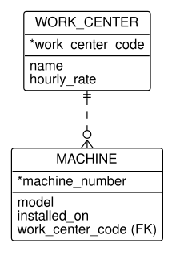
Three rules translate these boxes to classes.
- An identifier that the business uses becomes an attribute. Work center codes and machine numbers are business identifiers, so
workCenterCodeandmachineNumberare attributes ofWorkCenterandMachine, as in Figure 5.16. The class description records that each is unique (Section 5.3). - An artificial identifier is dropped. A column such as
checkout_idthat exists only to number rows has no place in a class model; the mapping of Section 6.6 adds a surrogate key to every table in any case. - A foreign key is dropped, and the line carries its meaning.
work_center_code (FK)inMACHINErepeats what the relationship line already says, that each machine belongs to a work center. A class model shows the association and no foreign key attribute (1).
Some ERD styles mark other kinds of attribute: a multivalued attribute, such as an employee’s several phone numbers, and a derived attribute, such as an age computed from a birth date. A multivalued attribute translates to a class of its own with a one-to-many association, since a table’s column holds one value (Section 2.1); a derived attribute is left out of the class model, or noted in the class description, since it is computed rather than recorded.
D.4 Relationships and multiplicity
A relationship is the ERD’s association, drawn as a line between two entity types. Recall Table 5.8: the mark nearer the box gives the maximum (a bar for one, the crow’s foot for many) and the mark farther from the box the minimum (a bar for one, a circle for zero). The marks sit at the same ends as UML’s numbers, so each end translates on its own:
| Crow’s foot end | UML multiplicity |
|---|---|
| bar, bar | 1 |
| circle, bar | 0..1 |
| circle, crow’s foot | 0..* |
| bar, crow’s foot | 1..* |
In Figure D.1, the line has two bars at WORK_CENTER and a circle with a crow’s foot at MACHINE. The UML association of Figure 5.16 has 1 at the work center and 0..* at the machine: each machine belongs to exactly one work center, and a work center has zero or more machines.
The translation is exact for the four ends of Table D.1 and no further. Crow’s foot has no mark for a count other than zero, one, and many, so a UML multiplicity such as 2..* or 1..3 becomes the nearest end (1..*) and a note. A relationship’s name, often a verb phrase written on the line (“performs”, “is assigned to”), translates to a UML association name or, when it names what one end is to the other, to a role name. A relationship between an entity type and itself, a unary or recursive relationship, translates to a recursive association with role names (1).
D.5 Associative entities and association classes
Crow’s foot draws only lines between two boxes. A many-to-many relationship with facts of its own, or a relationship among three entity types, is therefore drawn as an associative entity: an entity type in the middle, with a one-to-many line to each of the entity types it connects. Figure D.2 draws the stock levels of stage D4 this way.
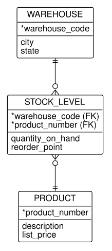
Read each line of Figure D.2 on its own: a warehouse has zero or more stock levels, each stock level is of exactly one warehouse, and the same for products. Its identifier is the pair of foreign keys. In UML the same facts are the association class StockLevel of Figure 5.7: an association between Warehouse and Product, 0..* at both ends, with quantityOnHand and reorderPoint on the association class.
An associative entity does not always become an association class. Recall the decision of Section 5.5 about order lines: an association class allows at most one link per pair of objects, so it is right only when the pair identifies the associative entity. The test in translation is the identifier:
- Identified by the pair of foreign keys, as
STOCK_LEVELis: an association class. - Identified by something else, a number of its own or the pair plus another attribute, because the same pair may occur more than once: a class with two associations. The order line of Figure 5.11, drawn as
OrderLinein Figure 5.21, is one; so is a checkout of a tool (Exercise 5.18).
The same test applies to an associative entity with three lines, the crow’s foot form of a ternary association (Section 5.5.1): identified by the three foreign keys, it is a ternary association with an association class; otherwise, a class with three binary associations.
D.6 Identifying relationships and composition
Crow’s foot distinguishes two kinds of relationship line. An identifying relationship, drawn as a solid line, is one whose parent’s identifier is part of the child’s identifier: the child cannot be identified, and so cannot exist, without its parent. A non-identifying relationship, drawn as a dashed line, only refers to the parent. A child entity type with an identifying relationship is often called a weak entity, and the part of its identifier that it adds is its partial identifier. Figure D.3 shows both kinds.
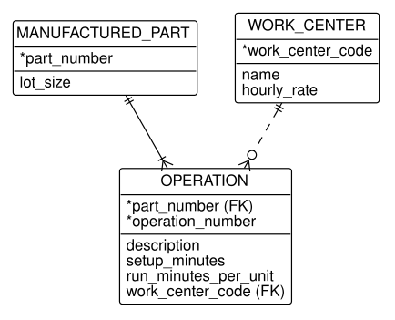
An operation of Figure D.3 is identified by its part’s number and its own operation number, so its line to MANUFACTURED_PART is identifying, solid: operation 20 means nothing without the part it belongs to. Its line to WORK_CENTER is dashed: the work center is a fact about the operation, not part of its name.
Now compare Figure 5.16. The identifying relationship with a partial identifier is the qualified composition ManufacturedPart [operationNumber] "1" *-- "0..1" Operation: the partial identifier operation_number becomes the qualifier, and the dependence of the operation on its part becomes the filled diamond. The non-identifying relationship is an ordinary association. The translation rules are:
- Identifying, with a partial identifier: a qualified association, usually a composition (Section 5.6).
- Identifying, with no partial identifier (the child’s identifier is the parent’s alone): a one-to-one association, often a composition, or, if the child is a kind of the parent, a generalization (the next section).
- Non-identifying: an ordinary association or an aggregation.
The translation back is looser, because UML distinguishes what crow’s foot does not. A UML composition says that the part cannot exist without its whole and is deleted with it, which Section 6.3.6 maps to on delete cascade; an identifying relationship says only how the child is named. An aggregation, such as a work center’s machines in Figure 5.16, has no crow’s foot mark at all: it becomes a non-identifying line, and the diamond is lost.
D.7 Subtypes and generalization
ERDs record kinds of an entity type as supertypes and subtypes, drawn in many styles: a subtype box inside its supertype, a circle joining the lines, or, as design tools and Figure D.4 draw it, a one-to-zero-or-one line from the supertype to each subtype, with the subtype sharing the supertype’s identifier.
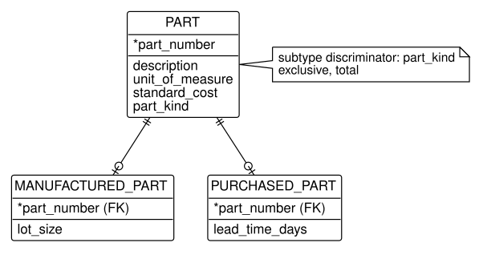
Each line of Figure D.4 says that a part may have one row of manufactured-part facts and one of purchased-part facts. The note adds what the lines cannot: a subtype discriminator, part_kind, whose value says which subtype a part belongs to, and two constraints. Exclusive (also called disjoint) means a part belongs to at most one subtype; total (also called complete) means every part belongs to one. Their opposites are overlapping and partial.
The translation is the generalization of Figure 5.17: Part is the superclass, ManufacturedPart and PurchasedPart its subclasses, and the constraints translate word for word: exclusive to {disjoint} and total to {complete}, and their opposites, overlapping and partial, to {overlapping} and {incomplete}. A total supertype has no objects of its own, so it becomes an abstract class, its name in italics, as Part is in Figure 5.17. The discriminator is dropped from the class model, since in UML an object’s class says its kind; it returns in the mapping, as the part_kind column of the single-table mapping of Section 6.5.3. The subtypes’ copies of part_number, marked (FK), are dropped as foreign keys are.
Reading a diagram drawn with plain one-to-zero-or-one lines and no note, you cannot tell a subtype from an ordinary optional one-to-one relationship. The test is the one of Section 5.7: is every manufactured part a part, with all of a part’s facts? If so, it is a subtype.
D.8 What does not translate
Most of a model survives translation in either direction. What does not is worth knowing before you translate, so that the losses are recorded in a note rather than silently dropped.
| UML construct | In crow’s foot | What is lost |
|---|---|---|
Multiplicity other than 0, 1, many (2..*) |
nearest end (1..*) |
the exact count; keep it in a note |
| Qualifier | partial identifier of a weak entity | nothing, if the relationship is drawn as identifying |
| Composition | identifying relationship | that the part is deleted with its whole |
| Aggregation | ordinary relationship | the whole-part meaning |
| Association class | associative entity | nothing, but the reverse translation needs the identifier test |
{ordered} |
a sequence-number attribute | the constraint becomes data |
{disjoint, complete} and their opposites |
a note or a style-specific symbol | the constraint, where the style has no symbol |
| Operations of a class | nothing | not used in data models |
In the other direction, a crow’s foot diagram carries facts that a class model leaves to the mapping: identifiers, foreign keys, and sometimes types and lengths. None of these is lost in translation, since Chapter 6 recreates them, but you should record in the class descriptions any business identifier and any rule the ERD states through its keys, such as the uniqueness of an operation number within its part.
D.9 Translating a model, step by step
The sections above translate one construct at a time. A whole model is translated in a fixed order, so that each decision rests on the ones before it. From crow’s foot to UML:
- Entity types to classes. Rename each to upper camel case. Set aside the associative entities and the subtypes for steps 4 and 5.
- Attributes. Keep each business attribute and business identifier; drop artificial identifiers and every attribute marked as a foreign key.
- Relationships to associations. Translate each end with Table D.1. Turn relationship names into association names or role names; give role names to every recursive relationship and to every second relationship between the same pair.
- Associative entities. Apply the identifier test of Section D.5: an association class if the foreign keys alone identify it, a class of its own otherwise.
- Identifying relationships and subtypes. A partial identifier becomes a qualifier; decide whether the dependence is a composition. Subtypes become a generalization with the constraints of the note.
- Read the result both ways. Read every association as two sentences
- and review the model with Table 5.6.
From UML to crow’s foot, the steps run in the same order: classes to entity types; attributes, adding the identifiers the class descriptions name; associations to relationships by Table D.1; association classes to associative entities; qualifiers to partial identifiers on identifying relationships; generalizations to subtypes with a discriminator; and every loss of Table D.2 to a note.
Example D.1 (Translating a production model from crow’s foot to UML) A consultant’s report on HG Industries’ production floor includes Figure D.5, drawn in crow’s foot notation with a design tool. The plant’s engineers maintain their models in UML.
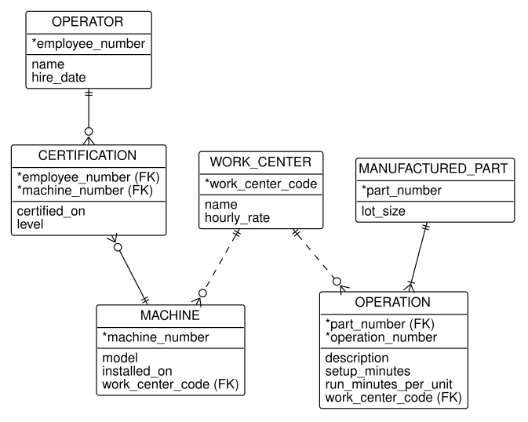
The request. Translate Figure D.5 into a UML class diagram, and check it against the class model of Figure 5.20.
The translation. We follow the procedure.
- Classes.
WORK_CENTER,MACHINE,OPERATOR,OPERATION, andMANUFACTURED_PARTbecomeWorkCenter,Machine,Operator,Operation, andManufacturedPart.CERTIFICATIONis associative and waits for step 4. - Attributes. The business identifiers stay as attributes:
workCenterCode,machineNumber,employeeNumber,partNumber. Every(FK)attribute is dropped:work_center_codefromMACHINEandOPERATION, and the foreign keys ofCERTIFICATIONandOPERATION.operation_numberis not a foreign key; it waits for step 5. - Associations.
WORK_CENTER ||..o{ MACHINEbecomes1at the work center and0..*at the machine;WORK_CENTER ||..o{ OPERATIONbecomes1and0..*. - The associative entity.
CERTIFICATIONis identified by the pair(employee_number, machine_number), its two foreign keys alone, so it is the association classCertification(certifiedOn,level) of an association betweenOperatorandMachine,0..*at both ends. Each end’s multiplicity comes from the crow’s foot at the associative entity: an operator has zero or more certifications, so zero or more machines. - The identifying relationship.
OPERATIONis identified by its part’s number andoperation_number, through a solid line:operationNumberbecomes a qualifier, and since an operation cannot exist without its part’s routing, the association is a composition,ManufacturedPart [operationNumber] "1" *-- "0..1" Operation. The crow’s foot1..*atOPERATION(every manufactured part has at least one operation) is not visible through the qualifier and goes into the class description.
The check. The result is the part of Figure 5.20 that Figure D.5 covers, with one difference: the diagram draws the work center’s machines with an ordinary line, and the class model with an aggregation. The crow’s foot diagram cannot state the whole-part meaning, so the translation cannot recover it; whether a work center is an assembly of its machines is a question for the engineers, not for the notation. Reading each association both ways confirms the rest: each operation is performed at exactly one work center; a work center performs zero or more operations.
Where it breaks. Had CERTIFICATION carried an identifier of its own, a certification number, the identifier test would have made it a class with two associations, allowing an operator to be certified twice on one machine. The diagram alone cannot say which the business intends; Exercise 5.5 asks the question the business must answer.
D.10 Exercises
Exercise D.1 Match each crow’s foot term with the UML term it translates to, and say where the translation can lose information.
| Crow’s foot | UML |
|---|---|
| a. entity type | 1. qualifier |
| b. relationship | 2. generalization |
| c. associative entity | 3. class |
| d. partial identifier | 4. association |
| e. supertype and subtypes | 5. association class, or a class of its own |
Exercise D.2 Translate Figure D.6 to a UML class diagram with the procedure of Section D.9, and compare it with your model of Exercise 5.18.
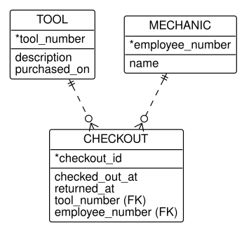
- Which attributes did you drop, and why?
CHECKOUTconnectsTOOLandMECHANIC. Why is it not an association class?
Exercise D.3 Translate Figure D.7 to UML.
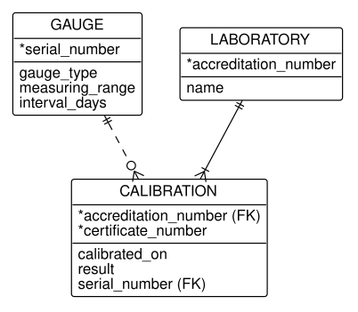
- Which relationship is identifying, and what does it become?
- The line from
LABORATORYhas a bar with a crow’s foot atCALIBRATION. Where does that minimum of one go in your UML model?
Exercise D.4 Translate Figure D.8 to UML.
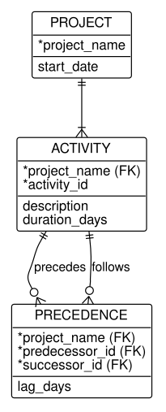
PRECEDENCEis related toACTIVITYtwice. What does that become?PRECEDENCEcarriesproject_nameonce, as part of both foreign keys. What rule does that state, and can your UML model state it?
Exercise D.5 Translate Figure D.9 to UML, and state the generalizations’ constraints.
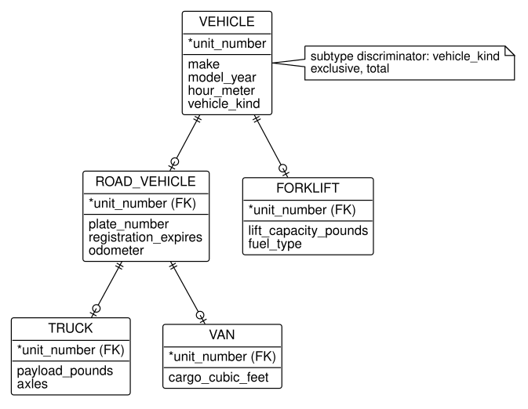
- What happens to
vehicle_kind? - The note applies to
VEHICLE. Does it say anything about the subtypes ofROAD_VEHICLE? What would you ask the business?
Exercise D.6 Translate the kanban model of Figure 6.15 from UML to crow’s foot notation, with identifiers.
- Which multiplicity cannot be drawn, and how do you record it?
- Choose an identifier for each entity type, and say which you had to invent.
Exercise D.7 Translate the equipment rental model of Figure 6.21 from UML to crow’s foot notation, with identifiers and foreign keys.
- What does the association class
Ratebecome, and what is its identifier? - Which of your relationships are identifying?
Exercise D.9 Translate the route network of Figure 6.23 to crow’s foot notation, and list everything Table D.2 says is lost, for this model in particular.
Exercise D.10 Describe Figure D.10 in English, writing each relationship as two sentences with its multiplicities in words, as 1 does for UML.
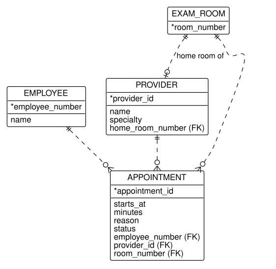
Which relationship is one-to-one, and which end of it is optional?
Exercise D.11 Describe Figure D.11 in English.
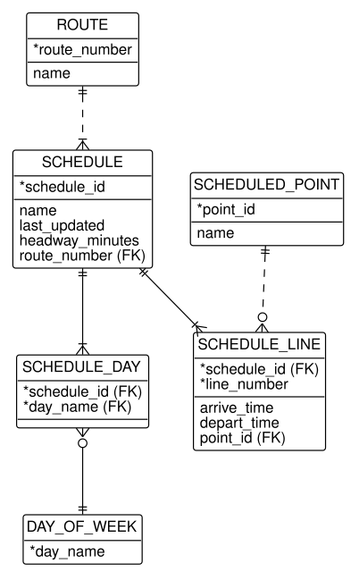
- Which entity type is associative, and is it an association class or a class in UML?
- Which relationships are identifying, and what do they become in UML?